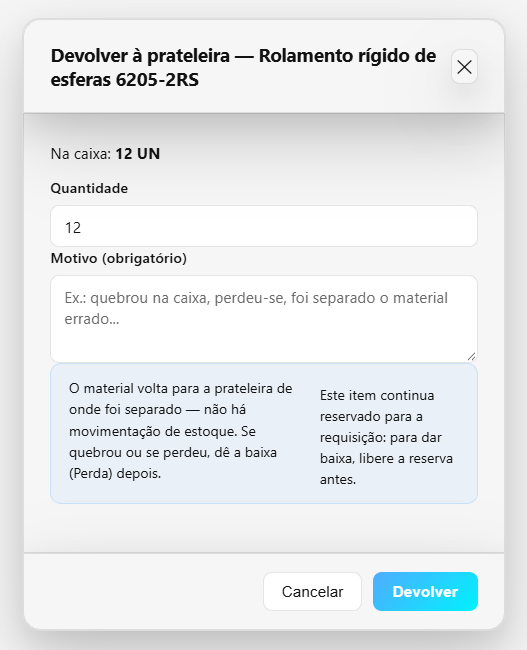
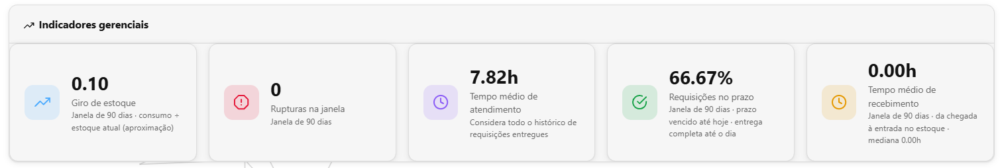
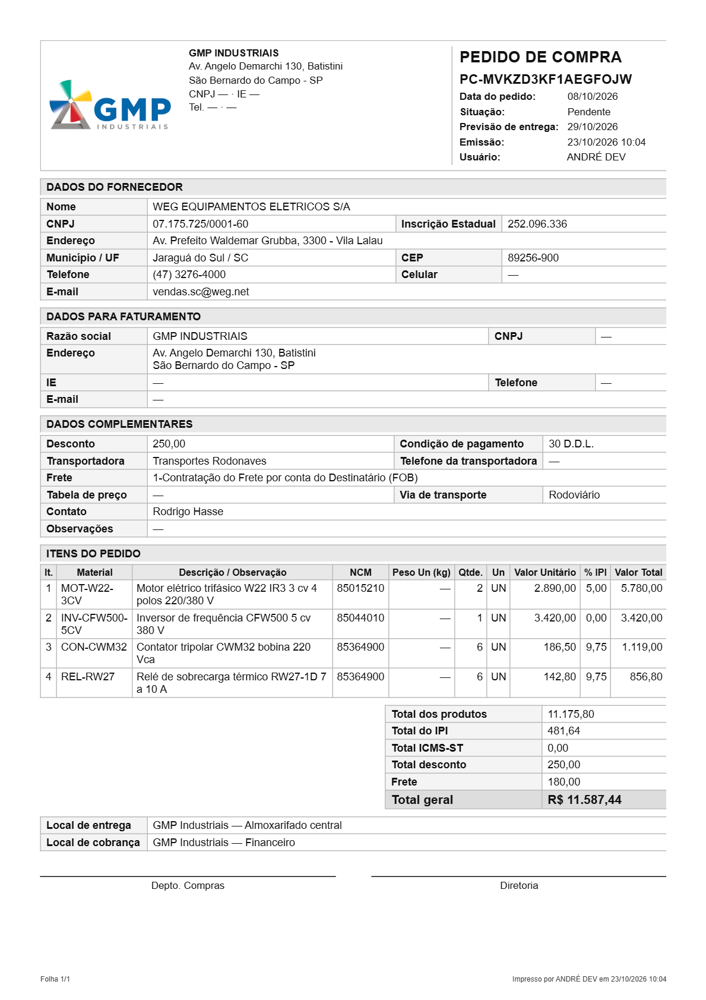
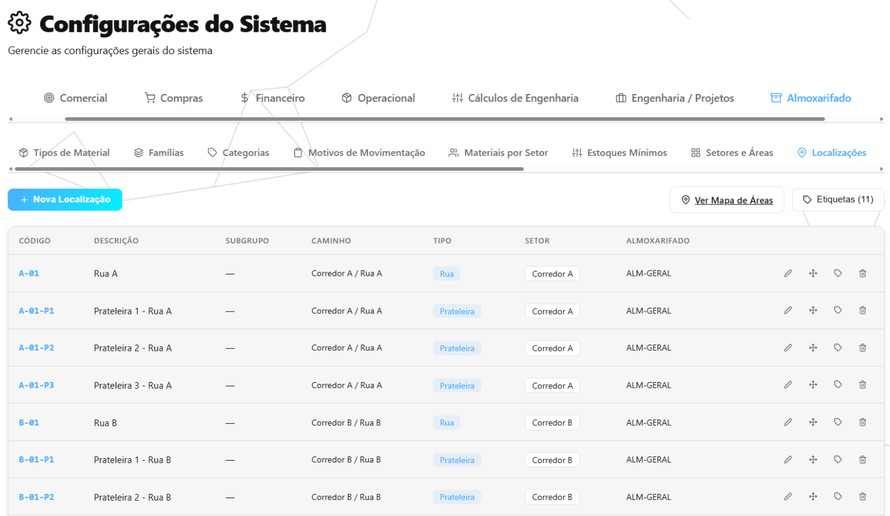
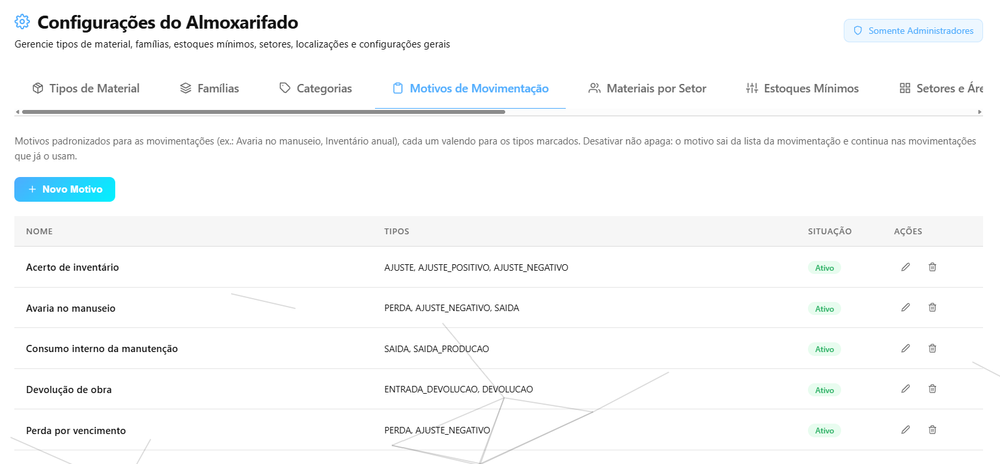
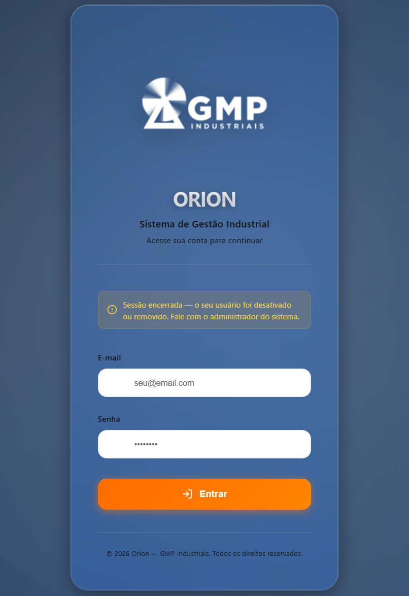

Resumo do mês — outubro de 2026 (parcial)
01/10 a 23/10/2026 · parcial · CRM GMP Industriais
Em outubro, o almoxarifado ganhou a Fila de separação, que diz o que separar, de onde pegar cada item e qual caixa está parada no balcão, e passou a registrar a entrega de EPI e o empréstimo de ferramenta com assinatura na tela. O pedido de compra passou a sair em PDF no formato da GMP e a poder ser feito para uma OS, o fornecedor ganhou uma ficha que se preenche pelo CNPJ, e o motorista da frota passou a registrar saída e retorno pelo celular. Por baixo, duas pessoas mexendo na mesma requisição deixaram de levar a mesma peça duas vezes, o material que chega passou a ficar com quem esperava por ele, as datas deixaram de pular para o dia seguinte depois das 21h e cada pessoa passou a ver só os dados da sua área. Até 23/10 foram cerca de 174 horas de trabalho, concentradas na requisição de material, no acesso por área e nas datas do sistema.
Horas do mês
Cerca de 174 horas de desenvolvimento no mês, até 23/10.
Horas por semana
| Semana | Horas no mês |
|---|---|
| 01/10 a 03/10 (a semana começa em 27/09; os dias de setembro contam no mês de setembro) | 16 h |
| 04/10 a 10/10 | 32 h |
| 11/10 a 17/10 | 44 h |
| 18/10 a 23/10 (a semana vai até 24/10; este resumo conta até 23/10) | 82 h |
| Total do mês, até 23/10 | 174 h |
Horas por atividade
| Atividade | Horas |
|---|---|
| Requisição de material: separação, entrega, caixa, reservas e aprovação | 29 h |
| Usuários e acessos: quem foi desativado sai, e cada pessoa vê só a sua área | 26 h |
| Datas e horas certas depois das 21h, em todo o sistema | 18 h |
| Listas, buscas e filtros; custos de viagem e cadastro de clientes | 15 h |
| Cadastro de materiais, famílias, fornecedores e configurações por módulo | 14 h |
| Propostas: o que se vê é o que fica guardado, e a aprovação de desconto | 11 h |
| Desfazer lançamentos, devoluções e estoque com casas decimais | 10 h |
| Fila de separação, motivos de movimentação, sucata, indicadores e validade do lote | 10 h |
| Pedido de compra: condições, documento em PDF, OS e fornecedor novo pelo F2 | 10 h |
| Entrega de EPI, ferramentas e documentos impressos sem corte | 10 h |
| Recebimento: o pedido que fecha e reabre, e o material que fica com quem esperava | 10 h |
| Documentos só com login, PDFs mais rápidos e instalação em computador novo | 6 h |
| Organização dos relatórios e manuais | 3 h |
| Frota: portal do motorista | 2 h |
| Total | 174 h |
Mexer nas telas foi a parte rápida: 4% do tempo, mesmo com todas as novidades do mês. Mais da metade foi nas conferências automáticas: são robôs que repetem centenas de situações a cada mudança — duas pessoas mexendo no mesmo material ao mesmo tempo, um lançamento desfeito no meio de uma devolução, uma mensagem enviada às 22h30, um usuário tentando ler o que não é da área dele — para que o que já funciona não quebre escondido. Esses erros quase nunca aparecem num teste feito à mão e custam caro quando aparecem: viram peça entregue em dobro, estoque que não bate ou dado na mão de quem não devia. O resto foi planejar cada mudança e atualizar os manuais. O ritmo cresceu ao longo do mês: quase metade das horas ficou na última semana.
As horas são estimadas pelo registro do trabalho salvo ao longo do mês. Pesquisa, conversas e testes feitos à mão não entram — o número real é maior.
O que mudou no mês
Requisição de material
Duas pessoas mexendo na mesma requisição, ou no mesmo material, deixaram de separar e entregar a mesma peça duas vezes: os gestos passaram a acontecer um depois do outro, e a separação não aceita mais do que existe na prateleira. A peça separada que quebrou ou era a errada volta à prateleira pelo botão “Devolver à prateleira”, sem precisar excluir a requisição. A entrega confere tudo antes de mexer no estoque, o cancelamento funciona em todos os módulos que mostram o botão, e cada situação da requisição mostra o botão certo.

Fila de separação: o que separar e de onde pegar
A Fila de separação mostra só as requisições com trabalho, na ordem em que devem ser feitas, e diz o que fazer em cada uma. Cada item diz “Pegar em (endereço) — lote”, com a ordem de coleta pelo caminho do almoxarifado e a lista de coleta para imprimir. A caixa separada que fica dias parada no balcão aparece em Alertas e vai por e-mail. O painel ganhou o cartão “Requisições no prazo”, e Relatórios ganhou Saldo por lote, Localizações vazias e Qualidade por fornecedor, entre outros.

A chegada do material
O material que chega pela nota, ou que sai liberado da inspeção, passou a ficar guardado para quem estava esperando por ele, na ordem da fila, com e-mail avisando quanto ficou para cada um. A solicitação de compra só fecha quando o material dela chega, e o pedido e a solicitação reabrem se a entrada da nota for desfeita. O recebimento que já deu entrada no estoque não muda mais de quantidade nem de valor, e o painel passou a mostrar quanto tempo a nota leva para virar estoque.

Pedido de compra e fornecedores
O pedido de compra sai em PDF no formato do documento que a GMP manda ao fornecedor, com condições de pagamento, frete, IPI, desconto e totais. Ele pode ser feito para uma OS: o que chega fica reservado para aquela OS. A ficha do fornecedor se preenche pelo CNPJ e pelo CEP, com o telefone da empresa e o do vendedor, e abre por cima do pedido pela tecla F2, sem perder o que já foi lançado.

Cadastros e configurações
As configurações de todos os módulos foram reunidas numa tela só, com um botão por módulo, e cada pessoa vê só os módulos a que tem acesso. As famílias de material ganharam subfamílias em árvore, e a unidade de compra virou a frase “1 CX contém 12 UN”. Material, família e grupo de fornecedores desativados voltam com o botão Reativar. E duas pessoas editando o mesmo cadastro não apagam mais, em silêncio, o que a outra acabou de mudar.

Movimentações e estoque que bate com a prateleira
O motivo de um ajuste ou de uma perda passou a ser escolhido de uma lista, e o histórico filtra e exporta por motivo. Desfazer um lançamento passou a ser tudo ou nada e a conferir o que já voltou ao estoque, para não devolver a mesma peça duas vezes. O material em quilo, metro ou litro não é mais recusado por causa de uma casa decimal, e a Entrada manual passou a guardar a validade do lote.

Entrega de EPI e ferramentas
A entrega de EPI saiu do papel: o colaborador assina na tela e confirma com a matrícula, o estoque baixa sozinho e EPI sem CA ou com CA vencido não sai. A ficha por colaborador sai em PDF com a assinatura de cada entrega. No empréstimo de ferramenta, o colaborador lê o termo de responsabilidade e assina; a ferramenta ganhou Editar, a volta da manutenção com destino e a baixa com motivo.

Acesso, datas e propostas
O usuário desativado sai na primeira ação, com o aviso “Sessão encerrada”, e cada pessoa passou a ver só os dados da sua área, inclusive na busca do topo. Datas e horas passaram a seguir o relógio de Brasília em todo o sistema: o que é feito depois das 21h não aparece mais com a data do dia seguinte. Na proposta, o que se vê na tela é o que fica guardado, e o desconto acima de 5% só é decidido por quem pode aprovar descontos e não foi quem pediu.

Também no mês: o motorista da frota passou a registrar saída, retorno, inspeção e abastecimento pelo celular, e o gestor exporta tudo no formato da planilha de controle; documentos da empresa (proposta, PDF da OS, contrato, cotações, fotos) deixaram de abrir sem login; o PDF da OS ficou cerca de dez vezes mais rápido; as buscas passaram a achar com e sem acento; e os documentos impressos deixaram de cortar nome comprido.
Relatórios das semanas
- 27/09 a 03/10 — Não Conformidades, Fila de separação, regras de aprovação e o material que chega ficando com quem esperava por ele (arquivo relatorio-semanal_2026-09-27_a_2026-10-03.pdf)
- 04/10 a 10/10 — pedido de compra em PDF, ficha do fornecedor pelo CNPJ, configurações numa tela só e duas pessoas na mesma requisição sem levar a mesma peça (arquivo relatorio-semanal_2026-10-04_a_2026-10-10.pdf)
- 11/10 a 17/10 — desfazer lançamentos sem estoque trocado, cadastros que voltam com Reativar, usuário desativado que sai na hora e a aprovação de desconto (arquivo relatorio-semanal_2026-10-11_a_2026-10-17.pdf)
- 18/10 a 24/10 — entrega de EPI e ferramenta com assinatura, fila que diz de onde pegar, pedido de compra para uma OS, portal do motorista e datas certas depois das 21h (arquivo relatorio-semanal_2026-10-18_a_2026-10-24.pdf)